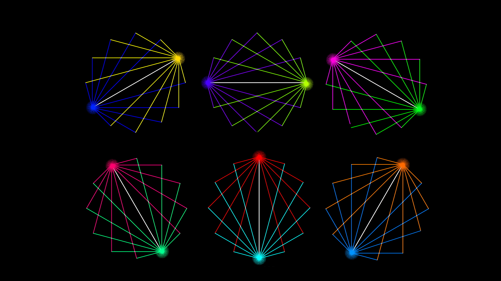

"If a Jazz musician plays someone else's song, he has a responsibility to make a distinct & original statement."― Todd Boyd
The first live performance of Portraits of Change will happen very soon. I will post the date, program notes, and go more in depth to why I chose the music we will play and how I approached the project musically for this first public performance.
Portraits of Change initially started as a recital focused on music innovation. I wanted to highlight past innovative works within jazz, and try to paint a "portrait" of the composer through their own music. A portrait can be defined as a painting, drawing, photo, or visual representation of a person usually depicting only the face or head and shoulders. A more abstract definition is a representation or impression of someone. That is exactly what we set out with our audiovisual environments, to paint with sound and light an impression of the mood and likeness of the composer. I hope that by adding a visual component to the music, it makes it more accessible to untrained ears and more enjoyable and immersive for everyone. I hope to spark joy and interest in these wonderful musicians throughout time that have inspired me and to foster more listeners to their music through this medium of mixed reality and music.
The project has expanded past just a simple music recital. The scope has changed all throughout the project, with music outside of the jazz idiom being explored for a more holistic approach to the Western musical canon such as musical theater as well as classical music. The recital performance will not be the end of the project, but marks an important milestone in the development of the prototype that will be further iterated and developed well past the initial first public performance.
The music we play with the technology in Portraits of Change will surely change and evolve with different musicians we will collaborate with and different schools I work on the project while attending. I hope to get a music technology masters after I graduate and continue developing this project. So the music you may hear may not be similar to what is performed in the recital performance.
Within Portraits of Change are 12 "Portraits," or musical sound environments that contain a virtual world that interacts with the live music being produced corresponding to the portrait. Each portrait has a specific color as the "tonic" or primary color which sets the portrait environment in relation to the other movements. The colors and visuals produced on stage will work complimentary and in contrast with this "tonic" color, and we will move around the color wheel throughout the performance.